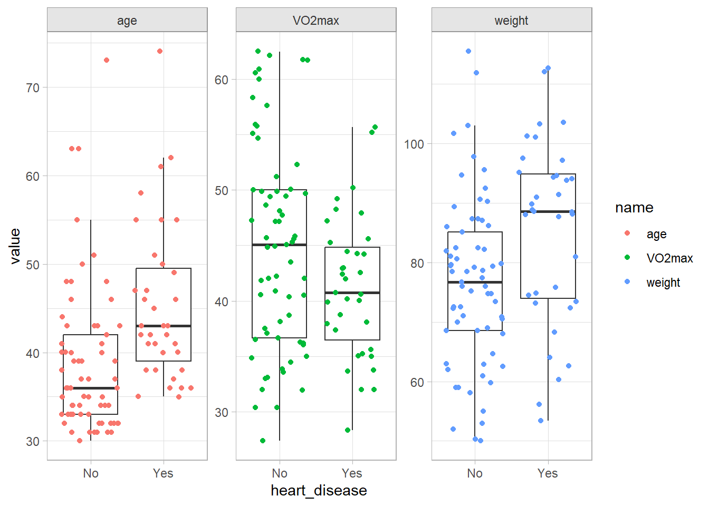
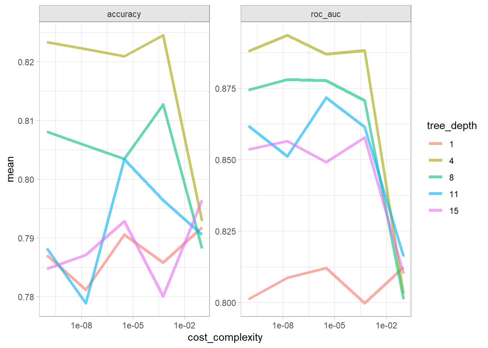
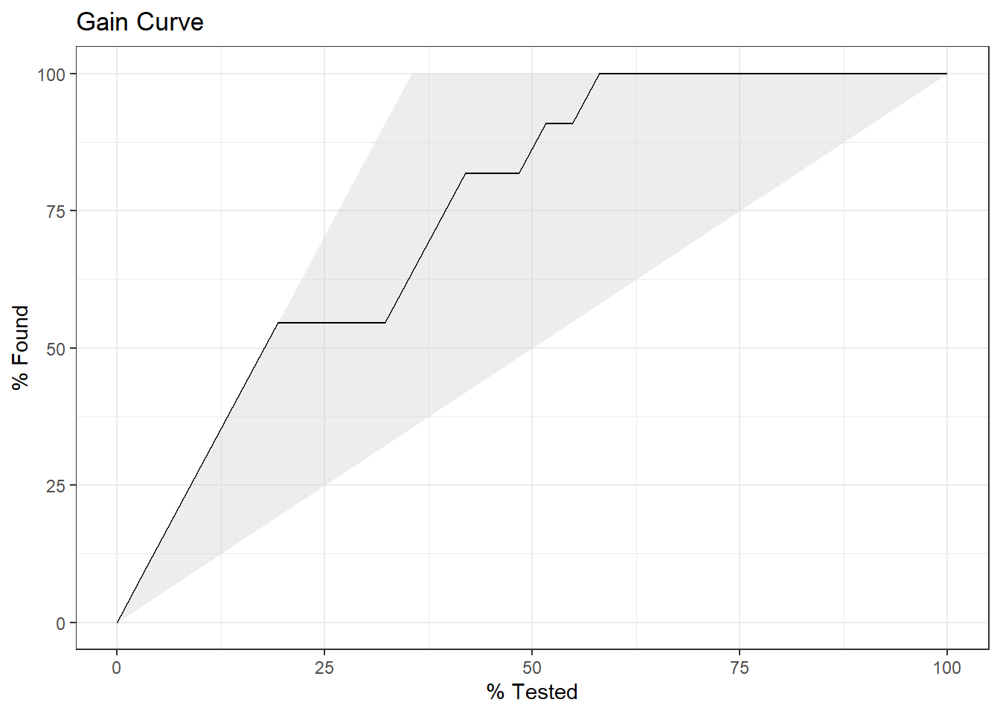
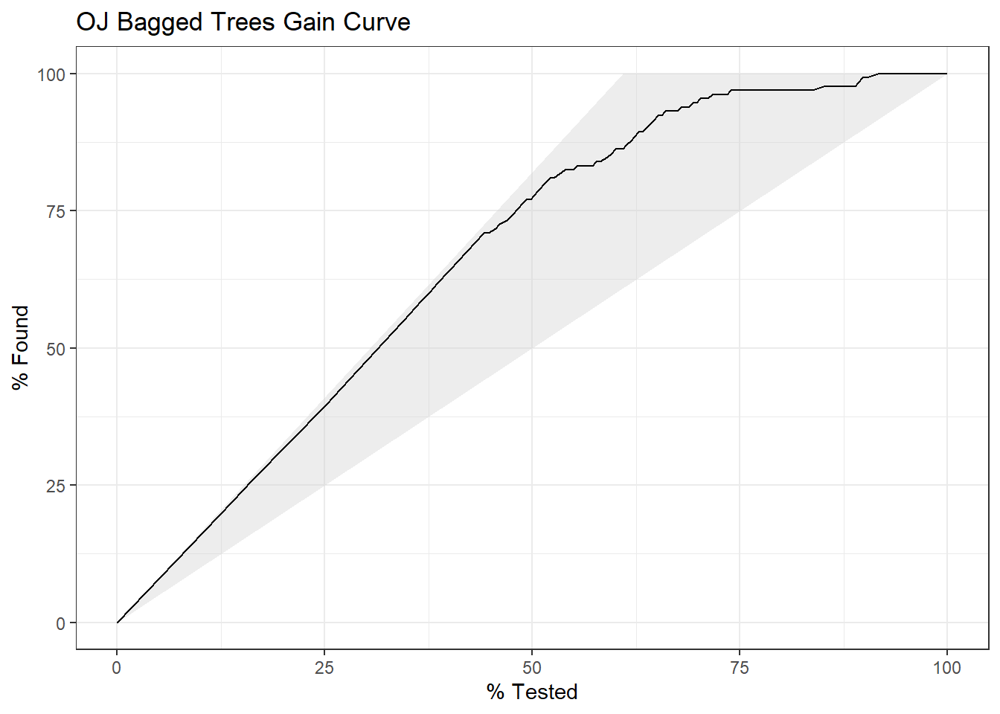

Chapter 9 Mixed Effects Models
Linear mixed effects models are used for cases in which there are multiple observations from the subjects. Multiple observations violates the independence assumption of linear regression. Repeated measures ANOVA is a popular way to analyze this kind of data, but it has several shortcomings. It does not control for covariates well, does not handle missing observations within a subject, requires a continuous outcome on categorical predictors, and does not estimate the magnitude or direction of effects (Brown 2021).
Linear mixed effects models address all of the shortcomings of repeated measures ANOVA, and can be generalized into categorical outcomes a well.
9.1 Linear Mixed Effects
Logistic regression estimates the probability that a categorical dependent variable is a particular level. The dependent variable levels can be binomial, multinomial, or ordinal. The binary logistic regression model is
\[y_i = \mathrm{logit}(\pi_i) = \log \left( \frac{\pi_i}{1 - \pi_i} \right) = X_i \beta\]
where \(\pi_i\) is the response \(i\)’s binary level probability. The model predicts the log odds of the level. Why do this? The range of outcomes need to be between 0 and 1, and a sigmoid function, \(f(y) = 1 / \left(1 + e^y \right)\), does that. If the log odds of the level equals \(X_i\beta\), then the odds of the level equals \(e^{X\beta}\). You can solve for \(\pi_i\) to get \(\pi = \mathrm{odds} / (\mathrm{odds} + 1)\). Substituting,
\[\pi_i = \frac{\exp(y_i)}{1 + \exp(y_i)} = \frac{e^{X_i\beta}}{1 + e^{X_i\beta}}\]
which you can simplify to \(\pi_i = 1 / (1 + e^{-X_i\beta})\), a sigmoid function. The upshot is \(X\beta\) is the functional relationship between the independent variables and a function of the response, not the response itself.
The model parameters are estimated either by iteratively reweighted least squares optimization or by maximum likelihood estimation (MLE). MLE maximizes the probability produced by a set of parameters \(\beta\) given a data set and probability distribution.1 In logistic regression the probability distribution is the binomial and each observation is the outcome of a single Bernoulli trial.
\[L(\beta; y, X) = \prod_{i=1}^n \pi_i^{y_i}(1 - \pi_i)^{(1-y_i)} = \prod_{i=1}^n\frac{\exp(y_i X_i \beta)}{1 + \exp(X_i \beta)}.\]
In practice, multiplying many small probabilities can be unstable, so MLE optimizes the log likelihood instead.
\[\begin{align} l(\beta; y, X) &= \sum_{i = 1}^n \left(y_i \log(\pi_i) + (1 - y_i) \log(1 - \pi_i) \right) \\ &= \sum_{i = 1}^n \left(y_i X_i \beta - \log(1 + e^{X_i\beta}) \right) \end{align}\]
Sometimes you will see the cost function optimized. The cost function is the negative of of the log likelihood function.
Assumptions
The binomial logistic regression model requires a dichotomous dependent variable and independent observations. The sample size should be large, at least 10 observations per dependent variable level and independent variable. There are three conditions related to the data distribution: i) the logit transformation must be linearly related to any continuous independent variables, ii) there must be no multicollinearity, and iii) there must be no influential outliers.
Be aware of over-dispersion, a common issue with GLM. For a binomial logistic regression, the response variable should be distributed \(y_i \sim \mathrm{Bin}(n_i, \pi_i)\) with \(\mu_i = n_i \pi_i\) and \(\sigma^2 = \pi (1 - \pi)\). Over-dispersion means the data shows evidence of variance greater than \(\sigma^2\).
Case Study
This case study uses data from Brown (2021)’s Laerd Statistics article on binomial logistic regression data set. A study investigates the relationship between the incidence of heart disease (Yes|No) and age, weight, gender, and maximal aerobic capacity using data from n = 100 participants.
cs1 <- list()
cs1$dat <- foreign::read.spss("./input/logistic-regression.sav", to.data.frame = TRUE)
cs1$dat %>%
gtsummary::tbl_summary(
by = heart_disease,
include = -caseno,
percent = "row",
statistic = list(gtsummary::all_continuous() ~ "{mean}, {sd}")
)| Characteristic | No, N = 651 | Yes, N = 351 |
|---|---|---|
| age | 39, 8 | 45, 9 |
| weight | 77, 14 | 85, 15 |
| gender | ||
| Female | 29 (78%) | 8 (22%) |
| Male | 36 (57%) | 27 (43%) |
| VO2max | 45, 9 | 41, 6 |
| 1 Mean, SD; n (%) | ||
Overall, men are twice as likely to have heart disease. Male odds are .43/.57 = 0.8 and female odds are .22/.78 = 0.3, an male-to-female odds ratio of 2.7.
| gender | Total | ||
|---|---|---|---|
| Female | Male | ||
| heart_disease | |||
| No | 29 (78%) | 36 (57%) | 65 (65%) |
| Yes | 8 (22%) | 27 (43%) | 35 (35%) |
| Total | 37 (100%) | 63 (100%) | 100 (100%) |
Age, weight, and poor max aerobic capacity are positively associated with heart disease.
cs1$dat %>%
pivot_longer(cols = c(age, weight, VO2max)) %>%
ggplot(aes(x = heart_disease, y = value)) +
geom_boxplot(outlier.shape = NA) +
geom_jitter(aes(color = name)) +
facet_wrap(facets = vars(name), scales = "free_y")
Consider centering the continuous variables around their means to facilitate model interpretation. The intercept term in the fitted model would represent a reasonable condition, not a zero-aged, zero-weighted person with no aerobic capacity. This is the way to go if you want to present your findings in the framework of a baseline probability (or odds) and the incremental effects of the independent variables. You might also standardize the continuous vars to get a more meaningful increment. On the other hand, if you want to use your model for predicting outcomes, you’ll have to back out of the centering when you predict values.
If your model is predictive rather than inferential, split the data into training/testing data sets.
Fit the Model
Fit the model using the tidymodels framework. If you want to continue using the classic methodology, the glm object is inside the tidymodels fit. The model fit returns a brief summary with the coefficients and model diagnostics.
cs1$model <-
logistic_reg() %>%
set_engine("glm") %>%
set_mode("classification")
cs1$fit <-
cs1$model %>%
fit(heart_disease ~ age + weight + VO2max + gender, data = cs1$dat)
# The fit object returned by glm(). You'll need this for interpretation and
# checking assumptions.
cs1$result <-
cs1$fit %>%
extract_fit_engine()
# If you are fitting a predictive model, use the training set.
cs1$fit_training <-
cs1$model %>%
fit(heart_disease ~ age + weight + VO2max + gender, data = cs1$dat_training)
cs1$result %>% summary()##
## Call:
## stats::glm(formula = heart_disease ~ age + weight + VO2max +
## gender, family = stats::binomial, data = data)
##
## Coefficients:
## Estimate Std. Error z value Pr(>|z|)
## (Intercept) -1.676469 3.336079 -0.503 0.61530
## age 0.085098 0.028160 3.022 0.00251 **
## weight 0.005727 0.022442 0.255 0.79858
## VO2max -0.099024 0.047944 -2.065 0.03889 *
## genderMale 1.949639 0.842413 2.314 0.02065 *
## ---
## Signif. codes: 0 '***' 0.001 '**' 0.01 '*' 0.05 '.' 0.1 ' ' 1
##
## (Dispersion parameter for binomial family taken to be 1)
##
## Null deviance: 129.49 on 99 degrees of freedom
## Residual deviance: 102.09 on 95 degrees of freedom
## AIC: 112.09
##
## Number of Fisher Scoring iterations: 5The null deviance, G^2, is the likelihood ratio of the intercept-only model with 69 rows - 1 parameter = 99 degrees of freedom. It is the sum of the squared deviance residuals. The residual deviance is the likelihood ratio of the full model with 100 - 5 parameters = 95 degrees of freedom.
The residual deviance is distributed chi-squared and can be used to test whether the model differs from the saturated model (model with as many coefficients as observations, G^2 = 0, df = 0) where \(H_0\) = no difference. The deviance test for lack of fit fails to reject the null hypothesis.
# G^2 calculations
cs1$result %>% residuals(type = "deviance") %>% .^2 %>% sum()
## [1] 102.0878
cs1$result %>% deviance()
## [1] 102.0878
# df
df.residual(cs1$result)
## [1] 95
# G^2 is distributed chi-squared with df degrees of freedom
pchisq(deviance(cs1$result), df = df.residual(cs1$result), lower.tail = FALSE)
## [1] 0.2911469
vcdExtra::LRstats(cs1$result)
## Likelihood summary table:
## AIC BIC LR Chisq Df Pr(>Chisq)
## cs1$result 112.09 125.11 102.09 95 0.2911These two deviances, the null and residual, are shown in the ANOVA summary. An ANOVA table shows the change in deviance from successively adding each variable to the model.
## Analysis of Deviance Table
##
## Model: binomial, link: logit
##
## Response: heart_disease
##
## Terms added sequentially (first to last)
##
##
## Df Deviance Resid. Df Resid. Dev
## NULL 99 129.49
## age 1 11.9074 98 117.58
## weight 1 9.1820 97 108.40
## VO2max 1 0.5045 96 107.89
## gender 1 5.8076 95 102.09Deviance residuals are one of four residuals you can calculate from a binary logistic regression.2 One is the raw residual, \(\epsilon_i = y_i - \hat{p}_i\), where \(\hat{p}_i\) is the predicted probability. Another is the Pearson residual, \(r_i = \frac{\epsilon_i}{\sqrt{\hat{p}_i(1 - \hat{p}_i)}}\), the raw residual rescaled by dividing by the estimated standard deviation of a binomial distribution with 1 trial3. A third is the standardized Pearson residual, \(rs_i = r_i / \sqrt{1 - \hat{h}_i}\), the Pearson residual adjusted for the leverage of the predictors using the hat-values. Hat-values measure the predictor distances from the mean. This residual is especially useful to evaluate model fit because if the model fits well, these residuals have a standard normal distribution. Finally, there are the deviance residuals, \(d_i = \mathrm{sign}(\epsilon_i) \left[ -2(y_i \log \hat{p}_i + (1 - y_i) \log (1 - \hat{p}_i)) \right]^{.5}\). Deviance Residuals measure how much the estimated probabilities differ from the observed proportions of success. You want deviance residuals to be evenly distributed (in absolute values, 1Q \(\approx\) 3Q, min \(\approx\) max). You also want the min and max to be <3 because deviance residuals are roughly approximated by a standard normal distribution.
bind_rows(
Raw = cs1$result %>% residuals(type = "response") %>% summary(),
Pearson = cs1$result %>% residuals(type = "pearson") %>% summary(),
`Standardized Pearson` = cs1$result %>% rstandard(type = "pearson") %>% summary(),
Deviance = cs1$result %>% residuals(type = "deviance") %>% summary(),
.id = "Residual"
)## # A tibble: 4 × 7
## Residual Min. `1st Qu.` Median Mean `3rd Qu.` Max.
## <chr> <table[1d]> <table[1d]> <table[1d]> <tab> <table[1> <tab>
## 1 Raw -0.7954587 -0.2500077 -0.1061849 -8.0… 0.3532839 0.91…
## 2 Pearson -1.9720520 -0.5773622 -0.3446596 -1.8… 0.7391867 3.34…
## 3 Standardized Pearson -2.1794172 -0.5918874 -0.3521058 -2.1… 0.7592960 3.39…
## 4 Deviance -1.7815642 -0.7585405 -0.4738051 -8.0… 0.9336278 2.23…Interpretation
Before we look at the coefficient estimations, consider what it is they are predicting: the log odds of the binary response. To see what that means, plug in values for the explanatory variables to get predictions. \(\hat{y}\) is the log odds of having heart disease.
(mean_person <-
cs1$dat %>%
select(-caseno) %>%
summarize(.by = gender, across(where(is.numeric), mean)))
## gender age weight VO2max
## 1 Male 40.79365 84.83270 46.40095
## 2 Female 41.62162 70.85324 38.91135
pred_log_odds <- cs1$fit %>% predict(new_data = mean_person, type = "raw")
names(pred_log_odds) <- mean_person$gender
pred_log_odds
## Male Female
## -0.3643411 -1.5819310Exponentiate to get the odds, \(\exp (\hat{y}) = \frac{\pi}{1 - \pi}\).
## Male Female
## 0.6946542 0.2055777Solve for \(\pi = \frac{\exp (\hat{y})}{1 + \exp (\hat{y})}\) to get the probability. Do the math, or use predict(type = "prob").
(pred_prob <- pred_odds / (1 + pred_odds))
## Male Female
## 0.4099091 0.1705222
cs1$fit %>% predict(new_data = mean_person, type = "prob")
## # A tibble: 2 × 2
## .pred_No .pred_Yes
## <dbl> <dbl>
## 1 0.590 0.410
## 2 0.829 0.171Now let’s interpret the coefficients.
## # A tibble: 5 × 5
## term estimate std.error statistic p.value
## <chr> <dbl> <dbl> <dbl> <dbl>
## 1 (Intercept) -1.68 3.34 -0.503 0.615
## 2 age 0.0851 0.0282 3.02 0.00251
## 3 weight 0.00573 0.0224 0.255 0.799
## 4 VO2max -0.0990 0.0479 -2.07 0.0389
## 5 genderMale 1.95 0.842 2.31 0.0206The intercept term is the log-odds of heart disease for the reference case. The reference case in the model is gender = “Female”, age = 0, weight = 0, and VO2max = 0. If the data was centered, the reference case would actually meaningful.
cs1$fit %>%
predict(new_data = list(age = 0, weight = 0, VO2max = 0, gender = "Female"),
type = "raw")## 1
## -1.676469Column “statistic” is the Wald \(z\) statistic, \(z = \hat{\beta} / SE(\hat{\beta})\). Its square is the Wald chi-squared statistic. The p-value is the area to the right of \(z^2\) in the \(\chi_1^2\) density curve:
cs1$fit %>%
tidy() %>%
mutate(p.chisq = map_dbl(statistic, ~pchisq(.^2, df = 1, lower.tail = FALSE))) %>%
pull(p.chisq)## [1] 0.615297092 0.002511644 0.798578389 0.038885956 0.020648470Interpret the coefficient estimates as the change in the log odds of \(y\) due to a one unit change in \(x\). If \(\delta = x_a - x_b\), then a \(\delta\) change in \(x\) is associated with a \(\delta \hat{\beta}\) change in the log odds of \(y\). \(\beta\) is the log odds ratio of \(x_a\) vs \(x_b\).
\[\log \left(\pi / (1 - \pi) |_{x = x_a} \right) - \log \left(\pi / (1 - \pi) |_{x = x_b} \right) = \log \left( \frac{\pi / (1 - \pi) |_{x = x_a}}{\pi / (1 - \pi) |_{x = x_b}} \right) = \delta \hat{\beta}\]
The exponential of the coefficient estimates is the change in the odds of \(y\) due to a \(\delta\) change in \(x\). \(\exp \beta\) is the odds ratio of \(x_a\) vs \(x_b\).
\[\mathrm{odds}(y) = e^{\delta \hat{\beta}}\]
## # A tibble: 5 × 5
## term estimate std.error statistic p.value
## <chr> <dbl> <dbl> <dbl> <dbl>
## 1 (Intercept) 0.187 3.34 -0.503 0.615
## 2 age 1.09 0.0282 3.02 0.00251
## 3 weight 1.01 0.0224 0.255 0.799
## 4 VO2max 0.906 0.0479 -2.07 0.0389
## 5 genderMale 7.03 0.842 2.31 0.0206All covariates held equal, a male’s log odds of heart disease are 1.95 times that of a female’s (log(OR)). A male’s odds are 7.03 times that of a female’s (OR). Of course, all covariate’s are not equal - males are heavier and have higher VO2max. Let’s run the calculations with the mean predictor values for male and female.
# Log OR
pred_log_odds["Male"] / pred_log_odds["Female"]
## Male
## 0.2303142
# OR
pred_odds["Male"] / pred_odds["Female"]
## Male
## 3.379034A one-unit increase in any of the continuous independent variables is interpreted similarly. The reference level is unimportant since the change is constant across the range of values. A one year increase in age increases the log-odds of heart disease by a factor of 0.09, and the odds by a factor of 1.09. To calculate the effect of a decade increase in age, multiply \(\beta\) by 10 before exponentiating, or raise the exponentiated coeficient by 10. The effect of a 10-year increase in age is to increase the odds of heart disease by 2.34. The odds double every ten years.
oddsratio::or_glm() is a handy way to calculate odds ratios from arbitrary increments to the predictors. Here are the ORs of a 10-year age change, 10 kg weight change, and VO2max change of 5.
## predictor oddsratio ci_low (2.5) ci_high (97.5) increment
## 1 age 2.342 1.391 4.270 10
## 2 weight 1.154 0.381 3.572 25
## 3 VO2max 3.281 11.033 1.124 -12
## 4 genderMale 7.026 1.428 40.155 Indicator variableNotice that the predicted probabilities have the sigmoidal shape of the binary relationship.
augment(cs1$fit, new_data = cs1$dat, type = "raw") %>%
ggplot(aes(x = age, color = gender)) +
geom_point(aes(y = as.numeric(heart_disease == "Yes"))) +
geom_point(aes(y = .pred_Yes), shape = 4) +
geom_smooth(aes(y = .pred_Yes), se = FALSE) +
labs(x = "Age",
y = NULL,
title = "Binary Fitted Line Plot") +
scale_y_continuous(breaks = c(0,1), labels = c("Healthy", "Heart Disease")) +
theme_light() +
theme(legend.position = "right")
Assumptions
Four assumptions relate to the study design: (1) the dependent variable is dichotomous; (2) the observations are independent; (3) the categories of all nominal variables are mutually exclusive and exhaustive; and (4) there are at least 10 observations per dependent variable level and independent variable. These assumptions are all valid here. Three more assumptions related to the data distribution:
There is a linear relationship between the logit transformation and the continuous independent variables. Test with a plot and with Box-Tidwell.
There is no independent variable multicollinearity. Test with correlation coefficients and variance inflation factors (VIF).
There are no influential outliers. Test with Cook’s distance.
Test the linearity assumption first. There are two ways to do this (do both). First, fit your model, then plot the fitted values against the continuous predictors. This is the GLM analog to OLS bivariate analysis, except now the dependent variable is the logit transformation. These plotted relationships look pretty linear.
cs1$fit %>%
augment(new_data = cs1$dat) %>%
pivot_longer(c(age, weight, VO2max)) %>%
ggplot(aes(x = value, y = .pred_Yes)) +
geom_point() +
facet_wrap(facets = vars(name), scales = "free_x") +
geom_smooth(method = "lm", formula = "y~x") +
labs(title = "Linearity Test: predicted vs continuous predictors", x = NULL)
The second test for linearity is the Box-Tidwell approach. Add transformations of the continuous independent variables to the model, \(x_{Tx} = x \log x\), then test their significance level in the fit.
# Using non-centered vars to avoid log(0) errors.
x <-
cs1$dat %>%
mutate(
age_tx = log(age) * age,
weight_tx = log(weight) * weight,
VO2max_tx = log(VO2max) * VO2max
)
cs1$boxtidwell_fit <-
logistic_reg() %>%
set_engine("glm") %>%
set_mode("classification") %>%
fit(heart_disease ~ age + weight + VO2max + gender +
age_tx + weight_tx + VO2max_tx,
data = x)
cs1$boxtidwell_fit %>% tidy()## # A tibble: 8 × 5
## term estimate std.error statistic p.value
## <chr> <dbl> <dbl> <dbl> <dbl>
## 1 (Intercept) -40.6 21.7 -1.87 0.0615
## 2 age 2.73 1.10 2.47 0.0135
## 3 weight 0.144 0.783 0.184 0.854
## 4 VO2max 1.32 1.82 0.724 0.469
## 5 genderMale 1.85 0.922 2.01 0.0443
## 6 age_tx -0.543 0.227 -2.40 0.0164
## 7 weight_tx -0.0266 0.146 -0.182 0.855
## 8 VO2max_tx -0.301 0.382 -0.788 0.431Focus on the three transformed variables. age_tx is the only one with a p-value nearly <.05, but it is customary to apply a Bonferroni adjustment when testing for linearity. There are eight predictors in the model (including the intercept term), so the Bonferroni adjusted p-value for age_tx is multiplied by 8. Do not reject the null hypothesis of linearity.
If the relationship was nonlinear, you could try transforming the variable by raising it to \(\lambda = 1 + b / \gamma\) where \(b\) is the estimated coefficient of the model without the interaction terms, and \(\gamma\) is the estimated coefficient of the interaction term of the model with interactions. For age, \(b\) is 0.085 and \(\gamma\) is -0.543, so \(\lambda\) = 0.843. This is approximately 1 (no transformation). It appears to be customary to apply general transformations like .5 (square root), 1/3 (cube root), ln, and the reciprocal.
Now check for multicollinearity. Variance inflation factors (VIF) estimate how much the variance of a regression coefficient is inflated due to multicollinearity. When independent variables are correlated, it is difficult to say which variable really influences the dependent variable. The VIF for variable \(i\) is
\[ \mathrm{VIF}_i = \frac{1}{1 - R_i^2} \]
where \(R_i^2\) is the coefficient of determination (i.e., the proportion of dependent variance explained by the model) of a regression of \(X_i\) against all of the other predictors, \(X_i = X_{j \ne i} \beta + \epsilon\). If \(X_i\) is totally unrelated to its covariates, then \(R_i^2\) will be zero and \(\mathrm{VIF}_i\) will be 1. If \(R_i^2\) is .8, \(\mathrm{VIF}_i\) will be 5. The rule of thumb is that \(R_i^2 \le 5\) is tolerable, and \(R_i^2 > 5\) is “highly correlated” and you have to do something about it. These are excellent.
## age weight VO2max gender
## 1.035274 1.900575 2.167067 2.502538Try calculating the \(\mathrm{VIF}\) for age.
I don’t know why this doesn’t work. It would work if the underlying model was OLS instead of GLM. The answer seems to be related to GVIF vs VIF, but I didn’t figure it out.)
r2 <- lm(age ~ weight + VO2max + gender, data = cs1$dat_training) %>%
summary() %>% pluck("r.squared")
(vif <- 1 / (1 - r2))
## [1] 1.049814Now check for influential outliers. Predict the response probabilities and filter for the predictions more than two standard deviations from the actual value and a Cook’s Distance greater than 4/N = 0.04.4 Cook’s distance measures how much predicted values change when observation i is removed from the data. Only two fitted values were both an outlier and influential, row ids 59 and 70. An index plot of Cook’s Distance shows the two points at the far left. You might examine the observations for validity. Otherwise, proceed and explain that there were two standardized residuals with value of 2.01 and 2.27 standard deviations which were kept in the analysis.
augment(cs1$result) %>%
mutate(
id = row_number(),
outlier = if_else(abs(.std.resid) >= 2, "Outlier", "Other"),
influential = if_else(.cooksd > 4 / nrow(cs1$dat), "Influential", "Other"),
status = case_when(
outlier == "Outlier" & influential == "Influential" ~ "Influential Outlier",
outlier == "Outlier" ~ "Outlier",
influential == "Influential" ~ "Influential",
TRUE ~ "Other"
)
) %>%
ggplot(aes(x = .fitted, y = .cooksd)) +
geom_point(aes(color = status)) +
geom_text(aes(label = if_else(influential == "Influential", id, NA_integer_)),
check_overlap = TRUE, size = 3, nudge_x = .025) +
geom_hline(yintercept = 4 / nrow(cs1$dat), linetype = 2, color = "goldenrod") +
scale_color_manual(values = c("Influential Outlier" = "firebrick",
"Influential" = "goldenrod",
"Outlier" = "slategray",
"Other" = "black")) +
theme(legend.position = "right") +
labs(title = "Index Plot of Cook's Distance.",
subtitle = "Row id labeled for values > 4 / N.")
Evaluate the Fit
There are several ways to evaluate the model fit.
- The likelihood ratio test
- Pseudo R-squared5.
- Accuracy measures
- Gain and ROC curves
The likelihood ratio test compares the log likelihood of the fitted model to an intercept-only model.
intercept_only <-
logistic_reg() %>%
set_engine("glm") %>%
set_mode("classification") %>%
fit(heart_disease ~ 1, data = cs1$dat)
(cs1$lrtest <- lmtest::lrtest(cs1$result, intercept_only$fit))## Likelihood ratio test
##
## Model 1: heart_disease ~ age + weight + VO2max + gender
## Model 2: heart_disease ~ 1
## #Df LogLik Df Chisq Pr(>Chisq)
## 1 5 -51.044
## 2 1 -64.745 -4 27.402 1.649e-05 ***
## ---
## Signif. codes: 0 '***' 0.001 '**' 0.01 '*' 0.05 '.' 0.1 ' ' 1The fitted model is significant, \(\chi^2\)(4) = 27.4, p < .001. Calculate the pseuedo-R2 with DescTools::PseudoR2().
I Can’t get this to work in the tidymodels framework. Using glm() for now.
x <- glm(heart_disease ~ age + weight + VO2max + gender,
data = cs1$dat,
family = "binomial")
cs1$pseudo_r2 <- DescTools::PseudoR2(x, which = c("CoxSnell", "Nagelkerke", "McFadden"))
cs1$pseudo_r2## CoxSnell Nagelkerke McFadden
## 0.2396799 0.3301044 0.2116126Laerd interprets this as the model explained 33.0% (Nagelkerke R2) of the variance in heart disease. This is how your would interpret R2 in an OLS model. UCLA points out that the various pseudo R-squareds measure other aspects of the model and are unique to the measured quantity. A pseudo R-squared is not very informative on its own; it is useful for comparing models. Accuracy measures formed by the cross-tabulation of observed and predicted classes is the better way to go.
cs1$conf_mat <-
cs1$fit %>%
augment(new_data = cs1$dat) %>%
# conf_mat requires truth to be first level of the factor variable.
mutate(across(c(heart_disease, .pred_class), ~fct_relevel(., "Yes"))) %>%
conf_mat(truth = heart_disease, estimate = .pred_class)
cs1$conf_mat
## Truth
## Prediction Yes No
## Yes 16 10
## No 19 55
cs1$conf_mat %>% summary()
## # A tibble: 13 × 3
## .metric .estimator .estimate
## <chr> <chr> <dbl>
## 1 accuracy binary 0.71
## 2 kap binary 0.322
## 3 sens binary 0.457
## 4 spec binary 0.846
## 5 ppv binary 0.615
## 6 npv binary 0.743
## 7 mcc binary 0.330
## 8 j_index binary 0.303
## 9 bal_accuracy binary 0.652
## 10 detection_prevalence binary 0.26
## 11 precision binary 0.615
## 12 recall binary 0.457
## 13 f_meas binary 0.525
cs1$conf_mat %>% autoplot()
The model accuracy, 71.0%, is the percent of observations correctly classified. The sensitivity, 45.7%, is the accuracy with regard to predicting positive cases. The specificity, 84.6%, is the accuracy with regard to predicting negative cases. If you are fitting a predictive model, use the testing data set for this.
cs1$fit_training %>%
augment(new_data = cs1$dat_testing) %>%
conf_mat(truth = heart_disease, estimate = .pred_class)## Truth
## Prediction No Yes
## No 16 5
## Yes 4 6Finally, plot the gain curve or ROC curve. In the gain curve, the x-axis is the fraction of items seen when sorted by the predicted value, and the y-axis is the cumulatively summed true outcome. The “wizard” curve is the gain curve when the data is sorted by the true outcome. If the model’s gain curve is close to the wizard curve, then the model predicts the response well. The gray area is the “gain” over a random prediction.
cs1$dat_testing %>%
bind_cols(predict(cs1$fit, new_data = cs1$dat_testing, type = "prob")) %>%
# event_level = "second" sets the second level as success
yardstick::gain_curve(.pred_Yes, truth = heart_disease, event_level = "second") %>%
autoplot() +
labs(title = "Gain Curve")
11 of the 31 participants had heart disease in the test data set.
- The gain curve encountered 6 heart disease cases (50%) within the first 8 observations (55%). It encountered all 11 heart disease cases on the 18th observation.
- The bottom of the grey area is the outcome of a random model. Only half the heart disease cases would be observed within 50% of the observations.
- The top of the grey area is the outcome of the perfect model, the “wizard curve”. Half the heart disease cases would be observed in 6/30=20% of the observations.
The ROC (Receiver Operating Characteristics) curve plots sensitivity vs specificity at varying cut-off values for the probability ranging from 0 to 1. Ideally, you want very little trade-off between sensitivity and specificity, with a curve hugging the left and top axes.
cs1$dat_testing %>%
bind_cols(predict(cs1$fit, new_data = cs1$dat_testing, type = "prob")) %>%
# event_level = "second" sets the second level as success
yardstick::roc_curve(.pred_Yes, truth = heart_disease, event_level = "second") %>%
autoplot() +
labs(title = "ROC Curve")
Reporting
A binomial logistic regression was performed to ascertain the effects of age, weight, gender and VO2max on the likelihood that participants have heart disease. Linearity of the continuous variables with respect to the logit of the dependent variable was assessed via the Box-Tidwell (1962) procedure. A Bonferroni correction was applied using all eight terms in the model resulting in statistical significance being accepted when p < 0.00625 (Tabachnick & Fidell, 2014). Based on this assessment, all continuous independent variables were found to be linearly related to the logit of the dependent variable. There were two standardized residuals with value of 2.01 and 2.27 standard deviations, which were kept in the analysis. The logistic regression model was statistically significant, χ2(4) = 27.40, p < .001. The model explained 33.0% (Nagelkerke R2) of the variance in heart disease and correctly classified 71.0% of cases. Sensitivity was 45.7%, specificity was 84.6%, positive predictive value was and negative predictive value was . Of the five predictor variables only three were statistically significant: age, gender and VO2max (as shown in Table 1). Females had 0.14 times lower odds to exhibit heart disease than males. Increasing age was associated with an increased likelihood of exhibiting heart disease, but increasing VO2max was associated with a reduction in the likelihood of exhibiting heart disease.
| Characteristic | OR1 | 95% CI1 | p-value |
|---|---|---|---|
| age | 1.09 | 1.03, 1.16 | 0.003 |
| weight | 1.01 | 0.96, 1.05 | 0.8 |
| VO2max | 0.91 | 0.82, 0.99 | 0.039 |
| gender | |||
| Female | — | — | |
| Male | 7.03 | 1.43, 40.2 | 0.021 |
| 1 OR = Odds Ratio, CI = Confidence Interval | |||
References
Notes from Machine Learning Mastery.↩︎
UVA discusses the four types of residuals you can calculate from a binary logistic regression.↩︎
This article suggests using three standard deviations for an outliers threshold.↩︎
Nice explanation here. Sounds like you should use pseudo R2 for model comparison, not for reporting goodness of fit↩︎